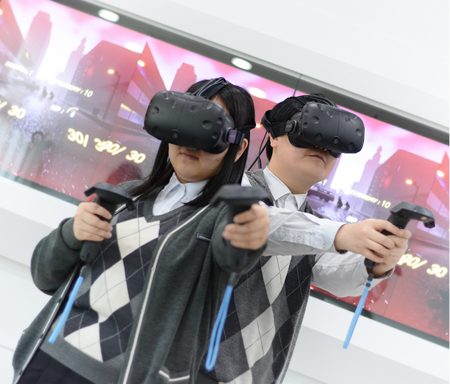
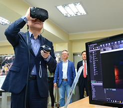
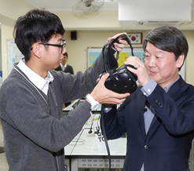
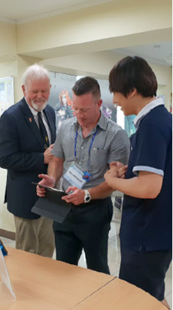

GAME DEVELOPMENT COURSE
CORE OF GLOBAL CULTURE CONTENTS
GAME CONTENTS
- INTRODUCTION
- Game contents department is a driving force for culture and IT industry.
- FOCUS
- Nurture the world's best game developers through project-oriented practical training and intensive major courses of 2D & 3D Graphic Design, Game Programming, Computer Music.

-
GAME
GRAPHIC - GOAL : Acquire job skills required for practical work using 2D & 3D game graphics creation tools
- SUBJECT : Computer Graphics, Game Production Foundation, 2D Computer Game Graphics, 3D Computer Game Graphics, Game Design, On-site Comprehensive Project.
- 2D GAME GRAPHIC - [Photoshop, Illustrator, InDesign, Spine2D]
- 3D GAME GRAPHIC - [3DS Max, Z brush, After Effect, Unity 3D, Unreal]
-
GAME
PROGRAMMING - GOAL : Develop games using C, C++, Windows API programming and DirectX
- SUBJECT : Programming, Game Production Foundation, Game Design, On-site Comprehensive Project
- [Visual Studio, Eclips, Java, C, C++, C#, HTML5, DirectX SDK, Unity 3D]
-
GAME
SCORING - GOAL : Create background music for games and animations
- SUBJECT : Music basic theory, Harmonics, Cubase, Sound editing, Audio effects & mixing
- CLUBS
- Game Illustrater, Broadcasting(DBS), Gamedevelopment Talents, Animation Talents, Gamedevelopment(ON), Gamedrawing, Gamegraphics(LUGH), KOI
- QUALIFICATION
- Craftsman Computer Graphics Operation, Certificate of Game Planner, Certificate of Game Programmer, Certificate of Game Graphics Designer, Craftsman Information Processing, Craftsman Information Equipment Operation, 1 degree GTQ(Graphic Technology Qualification), ITQ, Craftsman Web Design, Specialist-Multimedia Contents Producing
GAME DEVELOPMENT COURSE
DRIVING FORCE OF CULTURE & THE 4TH REVOLUTIONARY INDUSTRY
VR CONTENTS
- INTRODUCTION
- Virtual Reality contents department is the driving force of culture & the 4th revolutionary industry.
- FOCUS
- Nurture the world's best stereoscopic image experts through project-oriented practical training and intensive major courses of 2D & 3D Graphic Design, Game Programming, Computer Music.




-
VR
GRAPHIC - GOAL : Train stereoscopic image experts using 2D & 3D game graphics creation tools
- SUBJECT : Computer Graphics, Game Production Foundation, 2D Computer Game Graphics, 3D Computer Game Graphics, Game Design, Game Contents Production
- 2D Game graphics Design - [Photoshop, Illustrator, Flash, Painter, InDesign]
- 3D Game Graphics Design - [3DS MAX, Z brush, After Effect, Unity 3D, Unreal, Substance]
-
VR
PROGRAMMING - GOAL : Develop games using C, C++, Windows API programming and DirectX
- SUBJECT : Programming, Game Production Foundation, Game Design, On-site Comprehensive Project
- [Visual studio, Eclipse, Java, C, C++, C#, HTML5, DirectX SDK, Unity 3D, Unreal Blueprint]
-
GAME
SCORING - GOAL : Create background music for games and animations
- SUBJECT : Music basic theory, Harmonics, Cubase, Sound editing, Audio effects & mixing
- CLUBS
- Game Illustrater, Broadcasting(DBS), Game development Talents, Animation Talents, Game development(ON), Game drawing, Game graphics(LUGH), KOI
- QUALIFICATION
- Craftsman Computer Graphics Operation, Certificate of Game Planner, Certificate of Game Programmer, Certificate of Game Graphics Designer, Craftsman Information Processing, Craftsman Information Equipment Operation, 1 degree GTQ(Graphic Technology Qualification), ITQ, Craftsman Web Design, Specialist-Multimedia Contents Producing